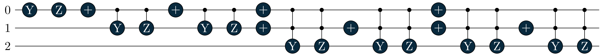

1 Overview
This post shows how to use Tequila to implement a quantum circuit which performs a Gaussian convolution.
The first chapter will give an overview over the structure that the circuit will have, and divide it into smaller subproblems which can be implemented separately. These implementations will be described in the next chapters, and combined into the final circuit at the end.
1.1 Goal
A Gaussian Convolution has an impulse response that is a Gaussian function \(g(x) = a \cdot \exp\left(-||x - b||_2^2 / c \right)\), so when applied to a function \(f: \mathbb{R}^d \to \mathbb{R}^d\), it yields a new function \[ (f * g)(i) = \int_{\mathbb{R}^d} f(j) \cdot g(i - j) dj \]
Note that \(g\) is separable, so even if we are interested in high-dimensional functions, it is sufficient to consider the one-dimensional case for now. We can then run the one-dimensional implementation multiple times on separate qubits to get a multi-dimensional implementation.
To implement this on a quantum computer, we want a circuit that instead of a function \(f\) takes a state \(\ket{\psi} = \sum_{k = 0}^{N - 1} \alpha_i \ket{i}\) on \(n\) qubits with \(N = 2^n\), and outputs the state \[ U \ket{\psi} = \ket{\psi} * g = z \cdot \sum_{i = 0}^{N - 1} \left(\sum_{j = 0}^{N - 1} \alpha_j \cdot g(i - j)\right) \ket{i} \] for some normalization factor \(z\).
For a basis state \(\ket{\psi} = \ket{j}\), this gives us \[ U \ket{j} = z \cdot \sum_{i = 0}^{N - 1} g(i - j) \ket{i} = z \cdot \sum_{i = 0}^{N - 1} \exp(-(i - j - b)^2 / c) \ket{i} \] where \(z\) might be a different normalization factor than before and might depend on \(j\).
Because the result will be normalized, \(a\) does not have any effect and can be ignored. We will also have to make an approximation to implement this efficiently, as we will see in the next section.
1.2 High-level circuit
Now we need to find a way to embed this operation into a quantum circuit. To do this, notice that the matrix representation is a Toeplitz matrix, i.e. a matrix where elements on the same diagonal have the same value.
For example, with \(n = 2\), \(b = -1\) and \(c = 1\), it would be \[ A = \begin{pmatrix} e^{-1} & 1 & e^{-1} & e^{-4} \\ e^{-4} & e^{-1} & 1 & e^{-1} \\ e^{-9} & e^{-4} & e^{-1} & 1 \\ e^{-16} & e^{-9} & e^{-4} & e^{-1} \\ \end{pmatrix} \]
We can follow [1] to implement this, however because we will have to load the value of each diagonal separately, we need to limit the number of diagonals to make this efficient. Luckily this is not an issue if we can tolerate some small error, since the values decrease exponentially in the distance, the number of diagonals only need to be logarithmic in the cutoff value.
In our example, we could limit it to three diagonals, ignoring values \(\leq e^{-4}\), resulting in the following matrix representation: \[ A' = \begin{pmatrix} e^{-1} & 1 & e^{-1} & 0 \\ 0 & e^{-1} & 1 & e^{-1} \\ 0 & 0 & e^{-1} & 1 \\ 0 & 0 & 0 & e^{-1} \\ \end{pmatrix} \]
Then we can build the following circuit, where \(\ket{0} \bra{0}\) indicates postselecting the register as \(\ket{0 \dots 0}\), i.e. rerunning the algorithm until a measurement of this register yields only zeros:
First, we use a PREP operation which can initialize any arbitrary state to load a single column of values onto the s register, in this example this would be \[ \begin{align} \text{PREP} \ket{0}^{\otimes 2} = z \cdot \begin{pmatrix} e^{-1} \\ 1 \\ e^{-1} \\ 0 \end{pmatrix} = z \cdot (e^{-1} \ket{0} + \ket{1} + e^{-1} \ket{2}) \\ = z \cdot \sum_{k = 0}^2 e^{-(k - 1)^2} \ket{k} = z \cdot \sum_{k = 0}^2 g(k - 2) \ket{k} \end{align}\] with some normalization factor \(z\).
Then we use an addition operation to add the state from the s register to the j register, which contains the input of the algorithm. This essentially copies the state initialized by PREP onto the register, but shifted by the incoming value (it copies in the sense that a CNOT gate copies a bit, not in the sense that violates the no-cloning theorem).
Next, we subtract some constant \(k\) to add an offset from the main diagonal. If we are considering \(2 \cdot m + 1\) diagonals, and the main diagonal with value \(1\) is in the center, that means there are \(m\) diagonals above that. Then \(k = m - b\), so in this example \(k = 2\).
The overflow qubit is treated as an additional high bit of the j register, and indicates that the two additions overflowed and caused values to wrap around the matrix. By postselecting it as \(\ket{0}\), those values can be filtered out. This part can be removed to optimize the circuit, if overflows are impossible or tolerable.
At the end we perform an UNPREP operation on the s register, which is in this case equivalent to a Hadamard gate on each qubit. The register is then postselected as \(\ket{0}^{\otimes n}\). This applies the first row of the matrix representation of \(H^{\otimes n}\), which contains only ones, i.e. builds a sum of the input values, combining the different values in the s register into a single state.
An alternative way of looking at this is as a linear combination of unitaries, where each of the unitaries is one of the diagonals.
Denoting the addition gates in square brackets, and \(\ket{0}_s \bra{0}_s\) as the postselection / projection on the \(\ket{0}^{\otimes d}\) state on the s register, the result of the circuit is: \[ \begin{align} \ket{0}_s \bra{0}_s U \left(\ket{0} \otimes \ket{j} \otimes \ket{0}\right) =& \ket{0}_s \bra{0}_s \text{UNPREP} \cdot [-2] \cdot [+d] \cdot \text{PREP} \\ &\quad \cdot \left(\ket{0} \otimes \ket{j} \otimes \ket{0}\right) \\[0.5em] =& \ket{0}_s \bra{0}_s \text{UNPREP} \cdot [-2] \cdot [+d] \\ &\quad \cdot \left(z \cdot \sum_{k = 0}^2 g(k - 2) \cdot \ket{k} \otimes \ket{j} \otimes \ket{0}\right) \\[0.5em] =& \ket{0}_s \bra{0}_s \text{UNPREP} \cdot [-2] \\ &\quad \cdot \left(z \cdot \sum_{k = 0}^2 g(k - 2) \cdot \ket{k} \otimes \ket{(k + j) \text{ mod } 4} \otimes \ket{\text{overflow}}\right) \\[0.5em] =& \ket{0}_s \bra{0}_s \text{UNPREP} \\ &\quad \cdot \left( z \cdot \sum_{k = 0}^2 g(k - 2) \cdot \ket{k} \otimes \ket{(k + j - 2) \text{ mod } 4} \otimes \ket{\text{overflow}} \right) \\[0.5em] =& \widetilde{z} \cdot \sum_{k = 0}^2 g(k - 2) \cdot \ket{0} \otimes \ket{(k + j - 2) \text{ mod } 4} \otimes \ket{\text{overflow}} \\[0.5em] \overset{i = k + j - 2}{=}& \widetilde{z} \cdot \ket{0} \otimes \sum_{i = j - 2}^{j} g(i - j) \cdot \ket{i \text{ mod } 4} \otimes \ket{\text{overflow}} \end{align} \] for some normalization factor \(\widetilde{z}\).
After postselecting the overflow bit as \(\ket{0}\), the values where the modulo operation has an effect are removed, so the sum will run from \(i = \max(j - 2, 0)\) to \(i = \min(j, 3) = j\), and the middle register contains the desired results.
The PREP and UNPREP operation here correspond to chosing \(p = 1\) in chapter 2.3 of [1]. This makes the calculation easier to follow, however the paper shows that chosing \(p = 1 / 2\) is better because it decreases the subnormalization, increasing the success rate of the postselection without changing the result of the circuit, so this is what we will do in the implementation.
1.3 Summary
We have seen that we can build a quantum circuit which implements a Gaussian convolution from three building blocks:
- A PREP block, which can initialize arbitrary states (which can also be used for the UNPREP block)
- An addition block which can add a value from one register to another
- An addition block which can add a compile time constant to a register
In the next chapters, we will see how to build these subcircuits, and at the end we will combine them to the full circuit.
2 State Preparation
To implement the preparation of arbitrary states, we will follow chapter 4 from [2].
2.1 Core Idea
To illustrate the idea, we will consider the reverse of what we actually want to do: Assume that we get some arbitrary (but determined at compile time) state \(\ket{\psi}\), and need to transform it to \(\ket{0}^{\otimes n}\). If we can do this, we can simply run the inverse of the circuit to go from \(\ket{0}^{\otimes n}\) to \(\ket{\psi}\).
For a single-qubit state this is easily done via a Z-rotation followed by a Y-rotation.
If we instead have a multi-qubit state on \(n\) qubits, we can write it in the following way:
\[ \ket{\psi} = \sum_{k = 0}^{2^{n - 1} - 1} c_k \ket{k} \otimes \ket{\psi_k} \]
Here, \(\ket{k}\) are the basis states of the first \(n - 1\) qubits, \(c_k\) some coefficients, and \(\ket{\psi_k}\) are single qubit states on the last qubit. With this formulation, we can apply our earlier single qubit approach to each \(\ket{\psi_k}\) individually by using multi-controlled rotations, and turning this state into
\[ \sum_{k = 0}^{2^{n - 1} - 1} c_k \ket{k} \otimes \ket{0} = \left(\sum_{k = 0}^{2^{n - 1} - 1} c_k \ket{k}\right) \otimes \ket{0} \]
So we have successfully unentangled the last qubit from the rest of the state. This can now be recursively repeated for the remaining \(n - 1\) qubits, until all of them are in the state \(\ket{0}\).
2.2 Implementation
To make the calculation of the angles efficient, we have to go from least to most signficant bit, allowing us to reuse results from lower bits for the calculation of higher bits.
Then we go through all the possible basis states \(i\) of the higher bits, and consider the coefficients \(a_0 \ket{0} + a_1 \ket{1}\) where the higher bits are in state \(i\). This allows us to calculate the relative magnitude and phase of these two coefficients, giving us the angles \(\theta\) and \(\varphi\) for the rotations. But we also need to calculate the “combined” coefficient, which will then be used for the next higher bit.
Code
def prepare_state(
state: npt.NDArray[float],
target: Sequence[int]
) -> tq.QCircuit:
theta = dict()
phi = dict()
combined = dict()
for bit in reversed(range(n)):
for i in range(2 ** bit):
a0 = state[2 * i] if bit == n - 1 else combined[bit + 1, 2 * i]
a1 = state[2 * i + 1] if bit == n - 1 else combined[bit + 1, 2 * i + 1]
r = hypot(abs(a0), abs(a1))
theta[bit, i] = 2 * np.arccos(np.abs(a0) / r) if r != 0 else 0
phi[bit, i] = phase(a1) - phase(a0)
combined[bit, i] = rect(r, (phase(a0) + phase(a1)) / 2)
...Now that we know the rotation angles, we can build the actual circuit. For this, we go from the most to least signifcant bit (we are doing the reverse of what was described earlier), and for each bit, iterate through states of the higher bits and apply the rotations. We implement the controls by inserting NOT gates, so that at the time of each rotation, the state we are looking at is \(\ket{1 \dots 1}\).
Code
...
U = tq.QCircuit()
for bit in range(n):
for i in range(2 ** bit):
diff = i ^ (i - 1)
for j in range(bit):
if diff & (1 << (bit - j - 1)):
U += tq.gates.X(target=target[j])
U += tq.gates.Ry(angle=theta[bit, i], target=target[bit], control=target[:bit])
U += tq.gates.Rz(angle=phi[bit, i], target=target[bit], control=target[:bit])
return UCalling this code with a 3-qubit state yields the following circuit:

It performs the correct operation, however there are multi-controlled rotations which will likely be a problem when attempting to run this on real hardware. We could let a compiler take care of this, but we don’t know how efficient that will be. Instead we’ll manually decompose it into single-controlled rotations and Toffoli gates, using our knowledge that there are other qubits in this circuit that we can borrow.
2.3 Decomposing multi-controlled rotations
If you refer to the overview of the full circuit in the previous chapter, you can see that we only have one additional qubit with a known initialization, the overflow qubit. Unfortunately this is not enough for our purposes, and we’d also like to keep the option of removing the overflow bit when we don’t need it. We could of course simply require additional ancilla qubits, but this would make the circuit more difficult to run. Luckily, we can use a trick described in [3], which allows us to borrow qubits that are already used for something else and in an unknown state. The only requirement is that this unknown state does not change while they’re borrowed.
For this, we use the fact that \[ X \cdot R_{Y/Z}(\theta) \cdot X = R_{Y/Z}(-\theta) \] to decompose the circuit in the following way:
If we have a clean qubit in state \(\ket{0}\), the decomposition is easy: We simply run a multi-controlled NOT on the ancilla qubit, and then use that ancilla as the control for the rotation. Then we repeat the controlled NOT to uncompute the effect on the ancilla.
If we don’t know the state of our ancilla, we run two rotations, one inside the two controlled NOTs, and one outside. This means that if the controlled NOTs are run, exactly one of those rotations gets executed, achieving the desired result. If the controlled NOTs are not run, it depends on the state of the ancilla. If this state is \(\ket{0}\), nothing happens. But if the state is \(\ket{1}\), then both rotations are run. Because of this there are two additional CNOTs, which will in this case flip the second rotation, making them cancel each other out. Note that this also works if the ancilla is in a superposition, since each component of the superposition will reach the same result.
Code
def multi_controlled_Ry(
angle: float,
target: int,
controls: Sequence[int],
ancillae: Sequence[int]
) -> tq.QCircuit:
U = tq.QCircuit()
if len(controls) <= 1:
U += tq.gates.Ry(angle=angle, target=target, control=controls)
return U
U += tq.gates.Ry(angle=angle, target=target, control=ancillae[-1])
U += tq.gates.CNOT(target=target, control=ancillae[-1])
U += multi_controlled_not(target=ancillae[-1], controls=controls, ancillae=ancillae[:-1], uncompute=False)
U += tq.gates.Ry(angle=angle, target=target, control=ancillae[-1])
U += multi_controlled_not(target=ancillae[-1], controls=controls, ancillae=ancillae[:-1], uncompute=False)
U += tq.gates.CNOT(target=target, control=ancillae[-1])
return UThe code for the Z-rotation is the same, simply replace Ry with Rz.
But now, even though we got rid of the multi-controlled rotation, we instead have multi-controlled NOTs, which we can also not directly execute. Luckily we can also resolve this using borrowed ancillae:
The idea here is similar to the previous circuit. By running controlled operations twice, interleaved with controlled NOTs, we are independent of the initial state of the qubit.
Note that the last three Toffoli gates in the circuit on the right are only necessary to uncompute the ancillae. In cases where we run this circuit twice, like in the decomposition of the rotation above, this is not necessary, since the two circuits will perform the same bitflips and cancel out.
Code
def multi_controlled_not(
target: int,
controls: Sequence[int],
ancillae: Sequence[int],
uncompute: bool = True
) -> tq.QCircuit:
if len(controls) <= 2:
return tq.gates.X(target=target, control=controls)
staircase = tq.QCircuit()
for i in range(2, len(controls) - 1):
staircase += tq.gates.Toffoli(first=controls[i], second=ancillae[i - 2], target=ancillae[i - 1])
U = tq.QCircuit()
U += tq.gates.Toffoli(first=controls[-1], second=ancillae[len(controls) - 3], target=target)
U += staircase.dagger()
U += tq.gates.Toffoli(first=controls[0], second=controls[1], target=ancillae[0])
U += staircase
U += tq.gates.Toffoli(first=controls[-1], second=ancillae[len(controls) - 3], target=target)
if uncompute:
U += staircase.dagger()
U += tq.gates.Toffoli(first=controls[0], second=controls[1], target=ancillae[0])
U += staircase
return UThe Toffoli gates can be directly decomposed into CNOTs and T gates, which we will not do here.
2.4 Gate count
We will now analyze the gate usage of these circuits, counting the rotations and Toffoli gates, as they determine the main cost of running the circuit, and ignoring NOT and CNOT gates.
The multi-controlled NOT decomposition with \(c \geq 2\) controls and without uncomputing the result uses \(2 + 2 \cdot (c - 3) + 1 = 2 c - 3\) Toffoli gates.
Multi controlled rotations with \(c \geq 2\) controls have two such decompositions, so \(4 c - 6\) Toffoli gates and two rotations.
For comparison, decomposing multi-controlled NOTs and rotations with \(c\) controls using the Tequila compile_circuit function doesn’t require any ancillae but seems to take approximately \(2^c\) single qubit rotations and CNOTs each, from some very quick tests.
The part of the PREP circuit operating on the \(k\)-th qubit (counting from 1) requires \(2^k\) \(Y\) and \(Z\) rotations, each with \(k - 1\) controls. However, if we assume that the coefficients of our state are real and positive, there are no phases so the Z-rotations can be removed. Some of the angles of the Y-rotations might be \(0\) too, but we assume here that they are all necessary.
This results in \(2^k\) rotations and \(2^{k - 1} \cdot (4 \cdot (k - 1) - 6) = 2^k \cdot (2 k - 5)\) Toffoli gates, except for \(k \leq 2\) where the decomposition is not necessary, so we get half as many rotations and no Toffoli gates.
Let \(D\) be the number of diagonals that we are loading in the PREP operation. Assuming that \(D\) is a power of 2 and we are operating on \(d = \log_2(D)\) qubits in total, for \(d = 1\) we have one rotation, and for \(d >= 2\) \[ 3 + \sum_{k = 3}^{d} 2^k = 2^{d + 1} - 5 = 2 D - 5 \] rotations. The number of Toffoli gates is \(0\) for \(d \leq 2\), and otherwise \[ \sum_{k = 3}^d 2^k \cdot (2k - 5) = 2^d \cdot (4 d - 14) + 24 = D \cdot (4 \log_2(D) - 14) + 24 \]
The costs are exponential in \(d\), but this is not surprising as the number of values we are loading is exponential in \(d\). More interesting to us is how the cost scales with \(D\). Especially considering that, if we allow cutting off values below some error threshold \(\varepsilon\), we only need \(D \in O(\log \varepsilon)\), we get costs in \(O(\log \varepsilon \cdot \log \log \varepsilon)\).
3 Addition
In this chapter we will implement the second building block we need: An addition circuit that adds the value of a source register to a target register. For this we will follow [4], which introduces the following circuit:
Here \(s\) is the sum \(a + b\) that we want to calculate. Unfortunately we can’t use the circuit directly, because it expects the source and target register to have the same size. In our case however, the target register might be larger, so we need to adapt it for that.
3.1 Allowing different register sizes
Instead of applying a NOT operation on a single overflow bit, we want to increment the high bits of the target register.
We cannot simply replace the two controlled NOTs with increment operations, because if both NOTs are executed, they cancel out, but if both increment operations are executed, they increment the value twice. To fix this, we will use a trick from [5]: Similar to the rotations in the previous chapter, an increment operation inverts, i.e. becomes a decrement, when its target bits are flipped before and after the operation.
This works because the bitwise complement of a two’s complement number is almost the negative of the number, more precisely \(\overline{a} = -a - 1\), so \[ \overline{\overline{a} + 1} = \overline{-a - 1 + 1} = \overline{-a} = a - 1 \]
So if we add controlled NOTs to all target registers at the beginning and end of the circuit that run if the first increment will run, then the increments cancel out. If only one of them is running, they will operate correctly.
Next, we need a way to implement an increment operation.
3.2 Increment gate
We will first implement an increment circuit that requires n borrowed ancilla qubits, and then improve this to only a single ancilla. Both are taken from [5].
We start with this subtraction widget, which is a modified version of a VanRentergem adder and subtracts the garbage in a register and a carry bit from the value in another register:
Code
def _subtraction_widget(
v: Sequence[int],
g: Sequence[int],
c: int
) -> tq.QCircuit:
g = [c] + list(g)
U = tq.QCircuit()
for i in range(len(v) - 1):
U += tq.gates.CNOT(control=g[i], target=v[i])
U += tq.gates.CNOT(control=g[i + 1], target=g[i])
U += tq.gates.Toffoli(first=g[i], second=v[i], target=g[i + 1])
U += tq.gates.CNOT(control=g[-1], target=v[-1])
for i in reversed(range(len(v) - 1)):
U += tq.gates.Toffoli(first=g[i], second=v[i], target=g[i + 1])
U += tq.gates.CNOT(control=g[i + 1], target=g[i])
U += tq.gates.CNOT(control=g[i + 1], target=v[i])
return UThen we apply this widget twice, but toggle the qubits of \(g\) around the second time, so the result in the \(v\) register will be \[ v - g - c - (-g - 1) - c = v - 2 c + 1 \]
The result is that if \(c = 0\), we perform an increment, and if \(c = 1\), we perform a decrement. We want to always perform an increment, and we know that we can turn a decrement into an increment by surrounding it with NOTs, so we do that, controlled by c.
As a last detail, because \(v\) has one more bit than \(g\), when adding both \(g\) and \(\overline{g}\), one of those will be negative, but the sign will act as a normal binary digit, toggling the high bit of \(v\). We can fix this by adding an additional NOT gate on this bit, ending up with the following circuit:
Code
def increment_circuit_n_ancillae(
target: Sequence[int],
ancillae: Sequence[int]
) -> tq.QCircuit:
v = target[::-1] # LSB ordering
# If there are more than n ancillas, ignore them
g = ancillae[:len(target)]
U = tq.QCircuit()
for i in range(len(v)):
U += tq.gates.CNOT(control=g[0], target=v[i])
for i in range(1, len(g)):
U += tq.gates.X(target=g[i])
U += tq.gates.X(target=v[-1])
U += _subtraction_widget(v, g[1:], g[0])
for i in range(1, len(g)):
U += tq.gates.X(target=g[i])
U += _subtraction_widget(v, g[1:], g[0])
for i in range(len(v)):
U += tq.gates.CNOT(control=g[0], target=v[i])
return UNext, we want to improve this from requiring \(n\) ancillae, to only one. To do this, we split one large increment gates into two smaller ones, each acting on half of the register, the second one indirectly controlled by the bits of the lower register using the borrowed ancilla. Reducing the size of the increments like this gives us enough unused qubits to use our \(n\) ancilla version.
We already know from the previous chapter how to decompose the multi-controlled NOTs, and have enough unused qubits here. Making a controlled increment is not a problem either, since this is equivalent to a larger increment and a NOT gate.
To see this, note that an increment gate is equivalent to a triangle of multi-controlled NOTs:
There is one issue left: Since this method increases the size of the increment on the higher bits, if the size of \(v\) is even, we are short one ancilla (if it is odd, we split the register so that the more significant half is one qubit smaller). This can be solved by pulling out the largest multi-controlled NOT, decreasing the size of the increment by one.
Code
def increment_circuit_single_ancilla(
target: Sequence[int],
ancilla: int
) -> tq.QCircuit:
split = (len(target) - 1) // 2
U = tq.QCircuit()
U += increment_circuit_n_ancillae(target=list(target[:split]) + [ancilla], ancillae=target[split:])
U += tq.gates.X(target=ancilla)
for i in range(split):
U += tq.gates.CNOT(control=ancilla, target=target[i])
U += multi_controlled_not(target=ancilla, controls=target[split:], ancillae=target[:split])
U += increment_circuit_n_ancillae(target=list(target[:split]) + [ancilla], ancillae=target[split:])
U += tq.gates.X(target=ancilla)
U += multi_controlled_not(target=ancilla, controls=target[split:], ancillae=target[:split])
for i in range(split):
U += tq.gates.CNOT(control=ancilla, target=target[i])
if len(target) % 2 == 0:
# The increment is too large, so pull one qubit out of the operation
U += multi_controlled_not(target=target[split], controls=target[split + 1:], ancillae=target[:split])
U += increment_circuit_n_ancillae(target=target[split + 1:], ancillae=list(target[:split]) + [ancilla])
else:
U += increment_circuit_n_ancillae(target[split:], list(target[:split]) + [ancilla])
return U3.3 Implementation
Now we have all of the tools we need to implement the addition circuit from the paper, with the changes mentioned above. Finding even a single ancilla is not easy though, since this operation covers every single qubit in our entire circuit, leaving not even borrowable ancillas.
We solve this problem by noting that we don’t need the ancilla for the entire addition circuit, but only during the increment. This increment only touches the last qubit of the s register, so we simply require that it has at least two qubits and use the first as the ancilla. It seems unlikely that we will want to implement a convolution with only two diagonals, so this limitation shouldn’t be an issue.
With this we get the following implementation:
Code
def addition_circuit(
source: Sequence[int],
target: Sequence[int]
) -> tq.QCircuit:
n = len(source)
# Change register to LSB ordering and name them like in the paper.
# Note that unlike in the paper, A_n does not exist, because of the special handling for larger target registers.
a = source[::-1]
b = target[::-1]
U = tq.QCircuit()
for i in range(1, n):
U += tq.gates.CNOT(control=a[i], target=b[i])
if len(target) > n:
U += increment_circuit_single_ancilla(target=list(b[n:][::-1]) + [a[n - 1]], ancilla=b[0])
U += tq.gates.X(target=a[n - 1])
for i in range(n, len(b)):
U += tq.gates.CNOT(control=a[n - 1], target=b[i])
for i in reversed(range(1, n - 1)):
U += tq.gates.CNOT(control=a[i], target=a[i + 1])
for i in range(n - 1):
U += tq.gates.Toffoli(first=a[i], second=b[i], target=a[i + 1])
if len(target) > n:
U += increment_circuit_single_ancilla(target=list(b[n:][::-1]) + [a[n - 1], b[n - 1]], ancilla=b[0])
U += tq.gates.X(target=b[n - 1])
U += tq.gates.CNOT(control=b[n - 1], target=a[n - 1])
for i in reversed(range(1, n)):
U += tq.gates.CNOT(control=a[i], target=b[i])
U += tq.gates.Toffoli(first=a[i - 1], second=b[i - 1], target=a[i])
for i in range(1, n - 1):
U += tq.gates.CNOT(control=a[i], target=a[i + 1])
for i in range(n):
U += tq.gates.CNOT(control=a[i], target=b[i])
if len(target) > n:
for i in range(n, len(b)):
U += tq.gates.CNOT(control=a[n - 1], target=b[i])
return U3.4 Gate count
Like before, we will only count Toffoli gates (there are no rotations here).
Our subtraction widget with \(n\) qubit registers has \(2 (n - 1)\) Toffoli gates.
The n ancilla increment gate uses two such widgets and contains no other Toffoli gates, so \(4 n - 4\) Toffoli gates.
The calculation for the one ancilla increment gate depends on the parity of \(n\).
For even \(n\), we need to keep the extra multi-controlled NOT in mind that was pulled out from the increment gate on the less significant bits. The more significant part has \(n / 2 - 1\) qubits, and the less significant part has \(n / 2 + 1\) qubits, so there are two increment gates on \((n / 2 - 1) + 1\) qubits, one on \((n / 2 + 1) - 1\) qubits, two NOTs with \(n / 2 + 1\) controls and one with \((n / 2 + 1) - 1\) controls. Unlike before, we need to uncompute the result of the multi-controlled not, requiring \(4c - 8\) Toffoli gates for \(c\) controls. This brings the total for the incrementer to \(12n - 28\) for \(n \geq 6\) (for smaller \(n\) the parts into which the register is split become too small for this calculation).
For odd \(n\), the more significant part has \((n - 1) / 2\) qubits, and the less significant part \((n + 1) / 2\). So we get two multi-controlled NOTs with \((n - 1) / 2\) controls, two increment gates on \((n + 1) / 2 + 1\) qubits, and one on \((n - 1) / 2\) qubits, for a total of \(10 n - 18\) Toffoli gates for \(n \geq 5\).
The adder from [4] with registers of size \(n\) uses \(2 n - 1\) Toffoli gates.
Let \(n\) be the size of the source register and \(n + k\) the size of the target register. If \(k = 0\), then we remove the Toffoli gate acting on the overflow qubit and get \(2 n - 2\) Toffoli gates. If \(k > 0\), we also remove this Toffoli gate, but add a \(k + 1\) and a \(k + 2\) qubit single-ancilla increment gate, one of which has is an even number of qubits and the other odd. If \(k \geq 5\), we get \(2 n + 22 k - 14\) Toffoli gates for even \(k\) and \(2 n + 22 k - 16\) for odd \(k\).
Even though it is linear, the cost of the modification to allow differently sized registers is high. A more efficient solution would be desirable, especially since our source register will generally be very small due to its exponential cost (as shown in the previous chapter), while the target register might be fairly large.
4 Constant Addition
In this chapter we will build a circuit that, instead of adding a value from another register, simply adds a compile time constant. For this, we will follow [6]. You might expect that it is easier to only add a single constant, however the problem here is that unlike in the previous chapter, we don’t have the second register to use as temporary working space. This makes this arguable the more difficult operation, which also shows in the asymptotic gate count not being linear but \(\Theta(n \log n)\).
4.1 Carry circuit
The main idea of this algorithm is that if we split the register we are working on in two parts, the only interaction between those is when there is a carry from the less significant to the more significant part. This means that, if we can detect this carry and increment the more significant part when it occurs, we can then work on the two parts separately, halving the size of the operation.
For this, we need the following carry operation:
Depending on the constant \(c\) that is added, some of the gates are removed, see [6] for details.
Code
def _carry_circuit(
target: Sequence[int],
const: int,
carry: int,
ancillae: Sequence[int]
) -> tq.QCircuit:
n = len(target)
U = tq.QCircuit()
if n == 1:
if const & 1:
U += tq.gates.CNOT(control=target[0], target=carry)
return U
U += tq.gates.CNOT(control=ancillae[n - 2], target=carry)
half = tq.QCircuit()
for i in reversed(range(1, n)):
if const & (1 << i):
half += tq.gates.CNOT(control=target[i], target=ancillae[i - 1])
half += tq.gates.X(target=target[i])
if i > 1:
half += tq.gates.Toffoli(first=ancillae[i - 2], second=target[i], target=ancillae[i - 1])
if const & 1:
half += tq.gates.Toffoli(first=target[0], second=target[1], target=ancillae[0])
for i in range(2, n):
half += tq.gates.Toffoli(first=ancillae[i - 2], second=target[i], target=ancillae[i - 1])
U += half
U += tq.gates.CNOT(control=ancillae[n - 2], target=carry)
U += half.dagger()
return U4.2 Implementation
This carry operation allows us to split the operation in half like described earlier:
Here \(x_H\) is the more significant half, and \(x_L\) the less significant half of the register, and similarly \(c_H\) and \(c_L\) are the more and less significant halves of the constant. Even though it looks like it, the carry operation doesn’t act on \(x_H\), only on \(x_L\) and the \(g\) ancilla.
We can reuse the n-ancilla incrementer from the last chapter here, and like before we have to be careful about the number of ancillae. If the register size is odd, we have exactly the right amount, but if it is even, we are missing one. We could solve this by not splitting the register in half, and instead making the less significant part larger, at the cost of a higher recursion depth. However we already required that the s register consists of at least two qubits in the last chapter, so we can use those as ancillae. One of these qubits can then be used as the additional ancilla we are missing.
Once the recursion reaches a single qubit, the addition operation is simply a NOT gate if \(c = 1\).
Code
def const_addition_circuit(
target: Sequence[int],
const: int,
ancillae: Sequence[int]
) -> tq.QCircuit:
n = len(target)
if n == 1:
U = tq.QCircuit()
if const & 1:
U += tq.gates.X(target=target[0])
return U
assert abs(const) < 2 ** n
assert len(ancillae) >= 2
split = n // 2
U = tq.QCircuit()
U += increment_circuit_n_ancillae(target=list(target[:split]) + [ancillae[0]],
ancillae=list(target[split:]) + [ancillae[1]])
U += tq.gates.X(target=ancillae[0])
for i in range(split):
U += tq.gates.CNOT(control=ancillae[0], target=target[i])
U += _carry_circuit(target=target[split:][::-1], const=const % (2 ** (n - split)), carry=ancillae[0],
ancillae=list(target[:split]))
U += increment_circuit_n_ancillae(target=list(target[:split]) + [ancillae[0]],
ancillae=list(target[split:]) + [ancillae[1]])
U += tq.gates.X(target=ancillae[0])
U += _carry_circuit(target=target[split:][::-1], const=const % (2 ** (n - split)), carry=ancillae[0],
ancillae=list(target[:split]))
for i in range(split):
U += tq.gates.CNOT(control=ancillae[0], target=target[i])
U += const_addition_circuit(target=target[:split], const=const >> (n - split), ancillae=ancillae)
U += const_addition_circuit(target=target[split:], const=const % (2 ** (n - split)), ancillae=ancillae)
return UWith this, we have all the building blocks we need for the full circuit that implements a Toeplitz matrix and the convolution.
4.3 Gate count
Again, we are only counting the Toffoli gates.
From the figure, we can see that the carry operation on an \(n\) qubit target register requires \(4 n - 6\) Toffoli gates if the lowest bit of the constant is set (otherwise two less) for \(n \geq 2\) and none for \(n = 1\) (there the circuit is a CNOT).
The constant addition on \(n\) qubits contains two \(\lceil n / 2 \rceil\) qubit carry gates, two \(\lfloor n / 2 \rfloor + 1\) qubit increment gates, and two smaller constant addition circuits with \(\lceil n / 2 \rceil\) and \(\lfloor n / 2 \rfloor\) qubits. For simplicity, we only calculate the number of gates for powers of two, and assume all bits of the constant are set. Denoting this number as \(f(n)\) we get \[f(n) = \begin{cases} 0 &\text{ for } n = 1 \\ 8 &\text{ for } n = 2 \\ 8 n - 12 + 2 f(n / 2) \\ \quad = 8 n \log_2(n) - 10 n + 12 &\text{ for } n > 2 \end{cases} \]
5 Integration
Now that we have all the building blocks, we can combine them to implement Toeplitz matrices and Gaussian convolutions.
5.1 Toeplitz matrix
As a reminder, this is the circuit we want to implement:
We have built all the parts in the previous chapters, but one detail was only mentioned briefly. Let \(A_d\) be the diagonals of the Toeplitz matrix. Instead of directly loading the values in PREP and using UNPREP only for combining the different values to a single state, we can follow chapter 2.3 from [1] and choose \(p = 1 / 2\) (which is shown there to be optimal), resulting in \[ \text{PREP} \ket{0} = \frac{\sum_d \text{sgn}(A_d) \sqrt{|A_d|} \ket{d}}{\sqrt{\sum_d |A_d|}} \] and \[ \bra{0} \text{UNPREP} = \frac{\sum_d \sqrt{|A_d|} \bra{d}}{\sqrt{\sum_d |A_d|}} \]
Implementing the Toeplitz matrix circuit is fairly simple now:
Code
def toeplitz_matrix(
diags: npt.NDArray[float],
target: Sequence[int],
ancillae: Sequence[int],
overflow: Optional[int],
offset: int
) -> tq.QCircuit:
n = len(target)
N = 2 ** n
d = len(ancillae)
D = 2 ** d
if overflow is not None:
target = np.append(overflow, target)
U = tq.QCircuit()
prep_values = np.exp(np.angle(diags) * 1j) * np.sqrt(np.abs(diags))
U += prepare_state(state=array_to_state(prep_values), target=ancillae, ancillae=target)
U += addition_circuit(source=ancillae, target=target)
U += const_addition_circuit(target=target, const=-offset, ancillae=ancillae)
unprep_values = np.sqrt(np.abs(diags))
U += prepare_state(state=array_to_state(unprep_values), target=ancillae, ancillae=target).dagger()
return UWith this, we are at the point where we can implement the example matrix from the first chapter:
Code
n = 2
N = 2 ** n
diags = np.array([exp(-i * i) for i in range(-1, 2)])
d = ceil(log2(len(diags)))
s = range(d)
j = range(d, d + n)
overflow = d + n
U = toeplitz_matrix(diags=diags, target=j, ancillae=s, overflow=overflow, offset=3)
...Even this small example results in a fairly large circuit, however that is expected, given the large constant factors in the gate counts:
At the start there are some redundant gates which could be simplified, this is due to the small circuit size and doesn’t happen for larger circuits. Some of the constructions from the previous chapters would need special handling for small registers to fix this.
A way to verify that this circuit does what it is supposed to is to evaluate it on all the basis states and visualize the resulting matrix. We can also use this opportunity to show the postselection success probability.
For this, it is convenient to write a helper function to encode the input, perform the postselection, and return the result as a Numpy array/matrix instead of a Tequila wavefunction, particularly for when we later want to have multiple dimensions:
Code
def eval_circuit(
states: Union[int, list[int]],
U: tq.QCircuit,
ranges: Union[int, list[int]],
offsets: Union[int, list[int]],
postselection_mask: int = 0
) -> tuple[np.ndarray, float]:
state_combined = 0
if isinstance(states, list):
for state, offset in zip(states, offsets):
state_combined |= state << offset
else:
state_combined = states << offsets
wvn = tq.simulate(prepare_basis_state(state_combined, U.n_qubits) + U, backend="qulacs")
postselected = {k.integer: v for k, v in wvn.state.items() if k.integer & postselection_mask == 0}
angle = np.angle(postselected[min(postselected.keys())])
result = np.zeros(ranges, dtype=np.complex128)
for i, val in postselected.items():
if isinstance(ranges, list):
index = tuple((i >> offset) % N for offset, N in zip(offsets, ranges))
else:
index = (i >> offsets) % ranges
if result[index] != 0:
raise ValueError("Multiple values in the same state with different ancilla states.")
result[index] = val * np.exp(-angle * 1j)
normalization = np.linalg.norm(result)
if normalization != 0:
result /= normalization
return result, normalizationThis makes visualizing the result with Pyplot simple:
Code
...
results = map(lambda j: eval_circuit(states=j, U=U, ranges=N, offsets=1, postselection_mask=0b11001), range(N))
columns, normalizations = zip(*results)
matrix = np.column_stack(columns)
normalization = np.array(normalizations)
fig, ax = plt.subplots(2, height_ratios=[N, 1], figsize=(10, 10))
ax[0].set_title("Operation Matrix", fontsize=24)
ax[0].xaxis.set_major_locator(MaxNLocator(integer=True))
ax[0].yaxis.set_major_locator(MaxNLocator(integer=True))
im0 = ax[0].imshow(np.real(matrix))
fig.colorbar(im0, ax=ax[0])
ax[1].set_title("Postselection Probability", fontsize=24)
ax[1].xaxis.set_major_locator(MaxNLocator(integer=True))
ax[1].yaxis.set_visible(False)
im1 = ax[1].imshow(np.square(normalization).reshape(1, -1), vmin=0, vmax=1)
fig.colorbar(im1, ax=ax[1])
plt.tight_layout()
plt.show()The top left corner might look wrong at first, but remember that each column has to be normalized, so we can’t get the exact matrix we intended. The third and fourth column are correct because none of the values are cut off, so the postselection has no effect.
We can also remove the overflow flag from the postselection mask to see what happens without it:
This might also look wrong at first, but this is because in a 4x4 matrix with 3 diagonals we only have one diagonal with value zero. The three values in the bottom left are what was cut off before, and now that we are skipping this step, you can see that the diagonals actually all have the same value.
To make the connection to the continuous convolution clearer, we can increase the number of qubits and plot the resulting wavefunction as a graph:
Code
n = 6
N = 2 ** n
diags = np.array([exp(-i * i / 32) for i in range(-15, 16)])
d = ceil(log2(len(diags)))
s = range(d)
j = range(d, d + n)
overflow = d + n
U = toeplitz_matrix(diags=diags, target=j, ancillae=s, overflow=overflow, offset=15)
result = eval_circuit(states=32, U=U, ranges=N, offsets=1, postselection_mask=0b111110000001)[0]
plt.figure(figsize=(20, 10))
plt.plot(np.real(result))
plt.xlabel("State")
plt.ylabel("Amplitude")
plt.tight_layout()
plt.show()For comparison, this is what the function \(g(x) = \exp((x - 32)^2 / 32)\) looks like:
The only major difference is the scale of the y-Axis, which is due to the normalization of quantum states.
We can also try what happens when we input a state that isn’t a basis state, but some superposition. Usually this superposition would be the result of the previous part of a larger circuit, but in our case we can simply add some Hadamard and NOT gates to get a similar effect. The circuit smooths the input state, as expected from a Gaussian convolution:
Code
n = 6
N = 2 ** n
diags = np.array([exp(-i * i / 32) for i in range(-15, 16)])
d = ceil(log2(len(diags)))
s = range(d)
j = range(d, d + n)
overflow = d + n
prepare = tq.QCircuit()
# make sure qubits aren't optimized out
for i in range(n + d + 1):
prepare += tq.gates.Rz(angle=0, target=i)
prepare += tq.gates.X(target=j[0])
prepare += tq.gates.H(target=j[0])
prepare += tq.gates.X(target=j[1])
prepare += tq.gates.H(target=j[-1])
prepare += tq.gates.H(target=j[-2])
init, _ = eval_circuit(states=0, U=prepare, ranges=N, offsets=1, postselection_mask=0b0)
U = toeplitz_matrix(diags=diags, target=j, ancillae=s, overflow=overflow, offset=15)
result, _ = eval_circuit(states=0, U=prepare + U, ranges=N, offsets=1, postselection_mask=0b111110000001)
fig, ax = plt.subplots(1, 2, figsize=(20, 10))
ax[0].set_title("Initialization", fontsize=24)
ax[0].plot(np.real(init))
ax[0].set_xlabel("State")
ax[0].set_ylabel("Amplitude")
ax[1].set_title("Result", fontsize=24)
ax[1].plot(np.real(result))
ax[1].set_xlabel("State")
ax[1].set_ylabel("Amplitude")
plt.tight_layout()
plt.show()5.2 Gate count
Let \(D\) be the number of diagonals and a power of 2, and \(d = log_2(D)\) the size of the s register. Let \(n\) be the number of input and output qubits and assume \(n + 1\) is a power of 2 and that \(n + 1 - d \geq 5\). The \(+1\) is because we also need to consider the overflow gate in the addition operations. Assuming the values of the diagonals are real and non-negative (otherwise the PREP and UNPREP operation would use more gates), we get the following gate counts:
- \(2 D - 5\) rotations and \(D \cdot (4 \log_2(D) - 14) + 24\) Toffoli gates for the PREP and UNPREP block each
- \(2 d + 22 (n + 1 - d) - 14\) Toffoli gates for the addition or two less if \(n + 1 - d\) is odd
- up to \(8 (n + 1) \log_2(n + 1) - 10 (n + 1) + 12\) Toffoli gates for the constant addition, depending on the constant
So the total number of rotations is up to \(4 D - 10 \in O(D)\), and the total number of Toffoli gates is up to \(2 D \cdot (4 d - 14) - 20 d + 8 (n + 1) \log_2(n + 1) + 12 n + 58\) \(\in O(D \log(D) +n \log(n))\).
5.3 Postselection success probability
Another important factor when considering the cost of this algorithm is subnormalization, which influences the chance that the postselection succeeds, as this will determine how often the algorithm needs to be repeated.
If we don’t postselect the overflow qubit, the implementation here is optimal. This is because the uniform wavefunction \(\ket{\psi} = \frac{1}{\sqrt{N}} \sum_{k = 0}^{N - 1} \ket{k}\) is a fixpoint of our algorithm. A Gaussian convolution has a smoothing effect, so if the wavefunction is already completely uniform, there is nothing left for it to do. But here, we are less interested in the shape of the result, and more in the norm. For this we need to multiply the scale of the PREP and UNPREP operations from earlier, which gives us the factor \(1 / \sum_d |A_d|\). However this is the exact value that the result gets from summing the different terms (except for a phase, which doesn’t matter for our uniform wavefunction), so it cancels out, and we get scale \(1\), i.e. a postselection success probability of 100%. This shows that we can’t possibly achieve a lower subnormalization, because then we could map \(\ket{\psi}\) to a wavefunction with norm greater than \(1\).
This doesn’t apply with the postselection on the overflow bit, but if we assume that the kernel is much smaller than the wavefunction (which we have to anyways, because of the exponential costs), then only a small number of values is removed, so the norm is still close to \(1\), and the circuit thus close to optimal.
Of course for other wavefunctions the success probability can be much lower or even \(0\), e.g. a quickly oscillating function where the positive and negative parts cancel out when smoothed, but this is due to the operation, not the implementation.
5.4 Multiple dimensions
Now that we have implemented the one dimensional case, we can easily extend this to multiple dimensions by simply running the same circuit on multiple registers in parallel:
Code
n = 4
N = 2 ** n
diags = np.array([exp(-i * i / 4) for i in range(-3, 4)])
d = ceil(log2(len(diags)))
s1 = range(d)
j1 = range(d, d + n)
overflow1 = d + n
s2 = range(overflow1 + 1, overflow1 + d + 1)
j2 = range(overflow1 + d + 1, overflow1 + d + n + 1)
overflow2 = overflow1 + d + n + 1
U = toeplitz_matrix(diags=diags, target=j1, ancillae=s1, overflow=overflow1, offset=3)
U += toeplitz_matrix(diags=diags, target=j2, ancillae=s2, overflow=overflow2, offset=3)
...This is also the point where wrapping the evaluation in eval_circuit starts to really help, because otherwise dealing with multiple input and output registers quickly becomes hard to read. It also allows to easily parallelize the evaluation of multiple states using the Python multiprocessing module (at the time of writing this helped due to inefficiencies in the Tequila simulate function, but since version 1.9.7 this should no longer be necessary). We will not evaluate every basis state, instead, confirming that it behaves correctly in the center, at the edges and in corners should be sufficient:
Code
...
fig, ax = plt.subplots(3, 3, figsize=(20, 20))
offsets = [0, 7, 15]
with Pool(9) as p:
results = p.starmap(eval_circuit, zip(
map(lambda x: list(x), product(offsets, offsets)), # states
repeat(U), # U
repeat([N, N]), # ranges
repeat([1, n + d + 2]), # offsets
repeat(0b1110000111100001), # postselection mask
))
matrices, normalizations = zip(*results)
for plot_i, plot_j in product(range(3), range(3)):
im = ax[plot_i, plot_j].imshow(np.real(matrices[3 * plot_i + plot_j]))
fig.colorbar(im, ax=ax[plot_i, plot_j])
plt.tight_layout()
plt.show()We can again add some initialization code to see how the circuit operates on other input:
Code
n = 4
N = 2 ** n
diags = np.array([exp(-i * i / 4) for i in range(-3, 4)])
d = ceil(log2(len(diags)))
s1 = range(d)
j1 = range(d, d + n)
overflow1 = d + n
s2 = range(overflow1 + 1, overflow1 + d + 1)
j2 = range(overflow1 + d + 1, overflow1 + d + n + 1)
overflow2 = overflow1 + d + n + 1
prepare = tq.QCircuit()
# make sure qubits aren't optimized out
for i in range(2 * (n + d + 1)):
prepare += tq.gates.Rx(angle=0, target=i)
prepare += tq.gates.X(target=j1[1])
prepare += tq.gates.H(target=j1[-2])
prepare += tq.gates.H(target=j1[-1])
prepare += tq.gates.H(target=j2[0])
prepare += tq.gates.X(target=j2[1])
init, _ = eval_circuit(states=[0, 0], U=prepare, ranges=[N, N], offsets=[1, n + d + 2], postselection_mask=0)
U = prepare + toeplitz_matrix(diags=diags, target=j1, ancillae=s1, overflow=overflow1, offset=3)
U += toeplitz_matrix(diags=diags, target=j2, ancillae=s2, overflow=overflow2, offset=3)
result, _ = eval_circuit(states=[0, 0], U=U, ranges=[N, N], offsets=[1, n + d + 2],
postselection_mask=0b1110000111100001)
fig, ax = plt.subplots(1, 2, figsize=(20, 10))
ax[0].set_title("Initialization", fontsize=24)
im0 = ax[0].imshow(np.real(init))
fig.colorbar(im0, ax=ax[0])
ax[1].set_title("Result", fontsize=24)
im1 = ax[1].imshow(np.real(result))
fig.colorbar(im1, ax=ax[1])
plt.tight_layout()
plt.show()In this example, you could also ignore the postselection because no values wrap around, so it doesn’t have any effect.
5.5 LCU
Lastly, we will see how to use a linear combination of unitaries to implement a weighted sum of Gaussian convolutions. This is not part of the algorithm, so we will only look at this briefly, but it seems likely that usecases of Gaussian convolutions will require it, and it is fairly simple with the tools developed already.
We will use the method described in [7]. The PREP block there is the same block we built in the second chapter, and the selection operator can be implemented in the same way as the multi controlled rotations in the PREP operator, so we get the following code:
Code
def lcu(
circuits: Sequence[tq.QCircuit],
coefficients: npt.NDArray[float],
flags: Sequence[int],
ancillae: Sequence[int]
) -> tq.QCircuit:
flags = flags[:ceil(log2(len(circuits)))]
U = tq.QCircuit()
prep_values = np.exp(np.angle(coefficients) * 1j) * np.sqrt(np.abs(coefficients))
U += prepare_state(state=array_to_state(prep_values), target=flags, ancillae=ancillae)
for i, (circuit, coefficient) in enumerate(zip(circuits, coefficients)):
diff = i ^ (i - 1)
for j in range(len(flags)):
if diff & (1 << j):
U += tq.gates.X(target=flags[-j - 1])
U += circuit.add_controls(flags)
# Handle the case that the number of circuits is not a power of 2
for j in range(len(flags)):
if not (len(circuits) - 1) & (1 << j):
U += tq.gates.X(target=flags[-j - 1])
unprep_values = np.sqrt(np.abs(coefficients))
U += prepare_state(state=array_to_state(unprep_values), target=flags, ancillae=ancillae).dagger()
return UAs a simple example, we can reuse the previous two dimensional circuit, but add a second convolution with the same values but slightly shifted. We give a negative coefficient to this new convolution, and double the weight of the original convolution:
Code
n = 4
N = 2 ** n
diags = np.array([exp(-i * i / 4) for i in range(-3, 4)])
d = ceil(log2(len(diags)))
s1 = range(d)
j1 = range(d, d + n)
overflow1 = d + n
s2 = range(overflow1 + 1, overflow1 + d + 1)
j2 = range(overflow1 + d + 1, overflow1 + d + n + 1)
overflow2 = overflow1 + d + n + 1
lcu_flag = overflow2 + 1
prepare = tq.QCircuit()
# make sure qubits aren't optimized out
for i in range(2 * (n + d + 1)):
prepare += tq.gates.Rx(angle=0, target=i)
prepare += tq.gates.X(target=j1[1])
prepare += tq.gates.H(target=j1[-2])
prepare += tq.gates.H(target=j1[-1])
prepare += tq.gates.H(target=j2[0])
prepare += tq.gates.X(target=j2[1])
init, _ = eval_circuit(states=[0, 0], U=prepare, ranges=[N, N], offsets=[1, n + d + 2], postselection_mask=0)
U1 = toeplitz_matrix(diags=diags, target=j1, ancillae=s1, overflow=overflow1, offset=3)
U1 += toeplitz_matrix(diags=diags, target=j2, ancillae=s2, overflow=overflow2, offset=3)
U2 = toeplitz_matrix(diags=diags, target=j1, ancillae=s1, overflow=overflow1, offset=-1)
U2 += toeplitz_matrix(diags=diags, target=j2, ancillae=s2, overflow=overflow2, offset=1)
U = prepare + lcu(circuits=[U1, U2], coefficients=np.array([2, -1]), flags=[lcu_flag], ancillae=range(lcu_flag))
result, _ = eval_circuit(states=[0, 0], U=U, ranges=[N, N], offsets=[2, n + d + 3],
postselection_mask=0b11100001111000011)
fig, ax = plt.subplots(1, 2, figsize=(20, 10))
ax[0].set_title("Initialization", fontsize=24)
im0 = ax[0].imshow(np.real(init))
fig.colorbar(im0, ax=ax[0])
ax[1].set_title("Result", fontsize=24)
im1 = ax[1].imshow(np.real(result))
fig.colorbar(im1, ax=ax[1])
plt.show()5.6 Conclusion
In this post, we have seen how we can implement a Gaussian convolution on a quantum superposition. For this we developed circuits which can prepare arbitrary states, add a value in a register to another register, and add a constant to a register. Combining these three operations allowed us to implement any Toeplitz matrix, including one dimensional Gaussian convolutions. Since Gaussian convolutions are separable, we were able to simply run this algorithm multiple times in parallel to extend it to multiple dimensions. We have also briefly seen that it is possibly to combine multiple convolutions to weighted sums of convolutions.
To be efficient, we need to approximate the convolution by cutting it off after a certain number of values, but this should rarely be an issue because of how quickly the coefficients of a Gaussian convolution drop towards \(0\). We achieved asymptotic rotation and Toffoli gate count of \(O(D \log(D) + n \log(n))\) for the one dimensional convolution, where \(D\) is the number of values that are considered, and \(n\) is the number of input and output qubits. By borrowing qubits which are already in use, the algorithm is able to avoid using dedicated ancilla qubits in most places.
Despite these favourable characteristics, there is likely to be much room for optimization, particularly for the large constant factors. Also the decompositions here focused on Toffoli gates, it would be interesting to see what costs can be achieved with different operations instead, like single qubit rotations and CNOTs.
5.7 References
The bibliography uses a citation style file from the CSL project: https://citationstyles.org/